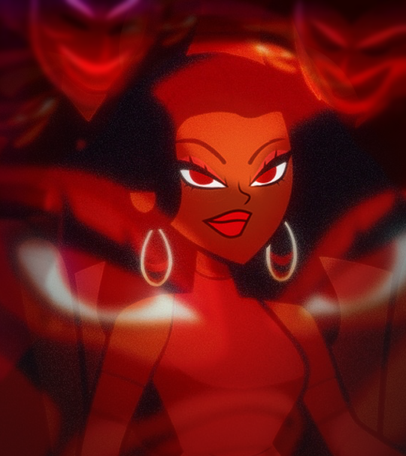

Estructura de Grupos
La competencia arranca con una división por grupos o brackets cerrados. Cada grupo funcionará de manera aislada bajo estrictas mecánicas psicológicas donde nadie puede confiar en quien tiene al lado.
Reglas del Tablero
- 12 Participantes por Bracket: Cada grupo opera de manera completamente independiente como una mini-experiencia aislada.
- Amenaza Oculta (1 a 3 Traidores): El formato asignará de forma aleatoria entre 1, 2 o 3 Traidores por grupo. ¡Nadie en la mansión sabrá cuántos rivales hay infiltrados!
- Aislamiento Absoluto: Los Traidores NO se conocen entre ellos mismos al inicio, provocando desconfianza incluso entre los propios miembros del bando rival.
- Sin Juicios Diarios: Durante la convivencia regular de los brackets no habrá votaciones de expulsión masivas; la mansión sufrirá únicamente asesinados directos cada día/episodio.
La Tabla Secreta de Desempeño
Cada reto sumará o restará puntaje de forma silenciosa. La posición exacta en la tabla general se mantendrá en secreto absoluto; ningún participante conocerá su ubicación real.
| Rendimiento en el Reto | Etiqueta | Impacto en Puntos |
|---|---|---|
| Ganador Absoluto | WIN | +3 Puntos |
| Segundo Lugar | TOP2 | +2 Puntos |
| Rendimiento Alto | HIGH | +1 Punto |
| Rendimiento Estándar | SAFE | 0 Puntos |
| Rendimiento Bajo | LOW | -1 Punto |
| Peor Rendimiento | LOSS | -2 Puntos |
Inmunidad Invisible y el Engaño del Asesinato
Solo el o los Traidores del grupo descubrirán de forma indirecta quién obtuvo el estatus de WIN (+3). Si durante la noche intentan asesinar al ganador del reto, se les notificará en privado que "no es posible eliminar a ese participante". De esta manera, los traidores obtienen valiosa información estratégica a ciegas, mientras el resto sigue en completa incertidumbre.
La Purga de los 8
Cuando la convivencia reduzca el bracket a exactamente 8 participantes, se disputará el último reto por la inmunidad más importante de la fase. Los resultados alterarán el destino de forma radical:
- Corte Automático por Puntos: Los 4 participantes con menor cantidad de puntos acumulados hasta ese instante quedarán eliminados de inmediato y de forma fulminante, perdiendo todo derecho a participar en la recta final del bracket.
- Salvación: Si un jugador en riesgo inminente de eliminación por bajo puntaje logra ganar este último reto estratégico (WIN), se salva automáticamente de la purga masiva.
- Efecto Colateral: Al salvarse el ganador, los 4 eliminados se definirán recalculando estrictamente los puntajes más bajos entre los 7 participantes restantes del grupo. Los 4 sobrevivientes definitivos avanzarán directo a la mesa del Juicio Final.
Mecánica Única del Juicio de Bracket
Los 4 finalistas de cada grupo se enfrentarán al único y definitivo juicio de la fase. Nadie conoce la identidad de los demás ni cuántos rivales reales quedan con vida en la mesa. La primera gran decisión se tomará mediante un veredicto de curso obligatorio y de carácter PÚBLICO:
Votar por TERMINAR
Se detiene el juego del bracket y se revelan las identidades ocultas de forma instantánea en la mesa.
Votar por CONTINUAR
La mesa decide que la amenaza sigue latente y se abre un proceso de ejecución interna inmediata.
Consecuencias de TERMINAR EL JUEGO
- Si al abrir las cartas queda **uno o más Traidores** infiltrados en la mesa, los rivales ganan la fase automáticamente y los inocentes son ejecutados en el acto.
- Si se decide terminar el juego y **NO hay ningún Traidor** presente, los inocentes ganan la experiencia limpia y avanzan con éxito.
Consecuencias de CONTINUAR EL JUEGO
- Se inicia una **Votación Pública Cara a Cara**. Cada miembro de la mesa expondrá sus argumentos y señalará directamente a quién considera traidor.
- La persona con mayor cantidad de votos acumulados en su contra será ejecutada inmediatamente.
- Leyes de Empate Extremo: En caso de empate entre dos personas, ambas mueren. Si se genera un empate grupal fragmentado, **todos los miembros de la mesa son ejecutados en el acto**, cerrando el bracket en un fracaso absoluto.
La Economía del Sacrificio Colectivo
Todos los participantes que superen la Fase 1 confluyen en la fase definitiva. A partir de este momento, el juego muta hacia un sistema transaccional estricto gobernado por puntos individuales:
- Puntajes Exclusivamente Positivos: Se elimina la escala negativa de la fase anterior. Los retos solo inyectarán puntos de carácter positivo a los puestos más destacados del episodio (WIN, TOPs, HIGHs).
- Nominación por Rendimiento Bajo: Los participantes que demuestren el peor desempeño en los desafíos quedarán nominados de forma directa en riesgo de eliminación.
- El Juicio por Ofrenda: La única manera de emitir un voto de salvación para rescatar a un nominado es **pagarlo restando puntos de tu propia tabla general**.
El Dilema del Traidor Egoísta
Retener tus puntos intactos te acerca a la victoria y te posiciona en la cima para ganar la temporada, pero condenas a tus aliados más cercanos a la eliminación por falta de apoyo. Ofrecer tus puntos para salvar a un compañero limpia tu reputación social, pero te debilita drásticamente de manera individual. No existen transferencias ni regalos directos de puntos permitted.
Cofres Secretos y Final Repentino
La etapa de cierre introduce mecánicas comerciales agresivas diseñadas para romper pactos y tentar la lealtad de los más fuertes:
Los Cofres de la Mansión
Durante ciclos clave, se pondrá a la venta **Cofres Secretos** con ventajas individuales críticas de alta relevancia estratégica. Adquirirlos demandará sacrificar grandes sumas de puntaje acumulado o tomar decisiones explícitas de traición directa hacia los compañeros para obtener el beneficio personal.
Corte Reloj de Arena
Esta temporada no cuenta con un número fijo de episodios en su recta final. En cualquier momento del juego y sin previo aviso, **el reality finalizará de manera repentina**. En ese instante exacto, la cantidad neta de puntos acumulados en la tabla dictará el destino final, coronando de forma indiscutible como ganador absoluto al participante con la mayor puntuación de la competencia.